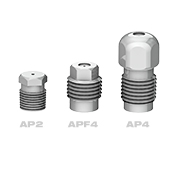
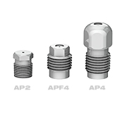
 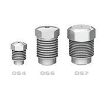
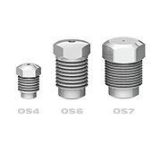
 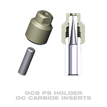
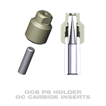
 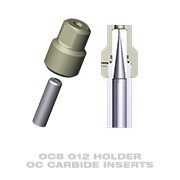
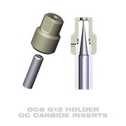
 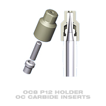
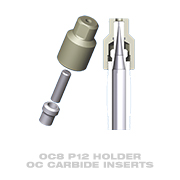
 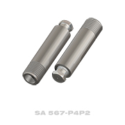
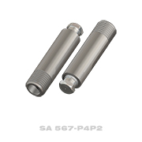
 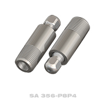
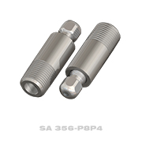
 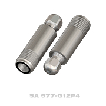
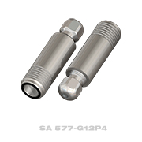
Nozzles and Extensions
StoneAge manufactures high quality, long lasting nozzles for all types of waterblast cleaning applications.
For Low/Medium Pressure Applications
StoneAge Attack Tips are the highest quality, longest lasting nozzles available for low and medium pressure applications (up to 22k psi - 1500 bar). Flow straighteners correct turbulence, ensuring excellent jetting results.
| Models Available | AP2 (1/8 NPT), APF4 (1/4 NPT Flush Mount), AP4 (1/4 NPT) | |
|---|---|---|
| Pressure Range | 2-22k psi | 140-1500 bar |
| Flow Range | 0.6-46 gpm | 2.3-174 l/min |
For High Pressure Applications
These nozzles are used for high pressure jetting applications where water filtration of 10 micron or better is required. Jeweled orifices make the best quality, longest lasting jets possible, especially for ultra-high pressures.
| Models Available | OS4 (1/4-28 NF), OS6 (3/8-24 NF), OS7 (7/16-20 NF) | |
|---|---|---|
| Pressure Range | 20-40k psi | 1400-2800 bar |
| Flow Range | 0.2-4.8 gpm | 0.8-18 l/min |
For High Flow Applications
We recommend using our OC8 Holders and OC8 Carbide Inserts where filtration is poor, abrasive solids are present or for v Replaceable carbide inserts are available in large orifice diameters to handle high flows and contain a long taper to provide excellent jet quality.
| Models Available | OC8 P8 (1/2 NPT), OC8 P12 (3/4 NPT), OC8 G12 (G12) | |
|---|---|---|
| Pressure Range | 2-22k psi | 140-1500 bar |
| Flow Range | 7-106 gpm | 26.5-401 l/min |
Durable Stainless Steel Construction
Maximize jet power and removal rates by placing nozzles close to the target surface. Extension nipples also enhance jet quality by improving upstream conditions. Standard lengths in stock for all StoneAge tools. Custom lengths available.
| Part Number | Port Size |
|---|---|
| SA 567-P4P2 | 1/4 NPT |
| SA 356-P8P4 | 1/2 NPT |
| SA 577-G12P4 | G12 |
| SA 569-G9S6 | G9 |
Our expert staff is available Monday through Friday 8AM - 5PM MST to answer questions and offer advice on your toughest cleaning applications.